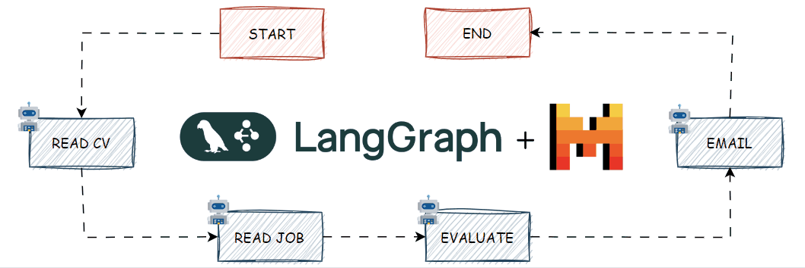

LangGraph + Mistral: CV Evaluator agent system
When it comes to managing agents in AI workflows, LangGraph is a powerful tool. This article aims to provide a straightforward guide, applying LangGraph to a practical use case. We’ll explore its features while utilizing Mistral. This solution enables access to free large language models (LLMs) without the need for expensive computation.
